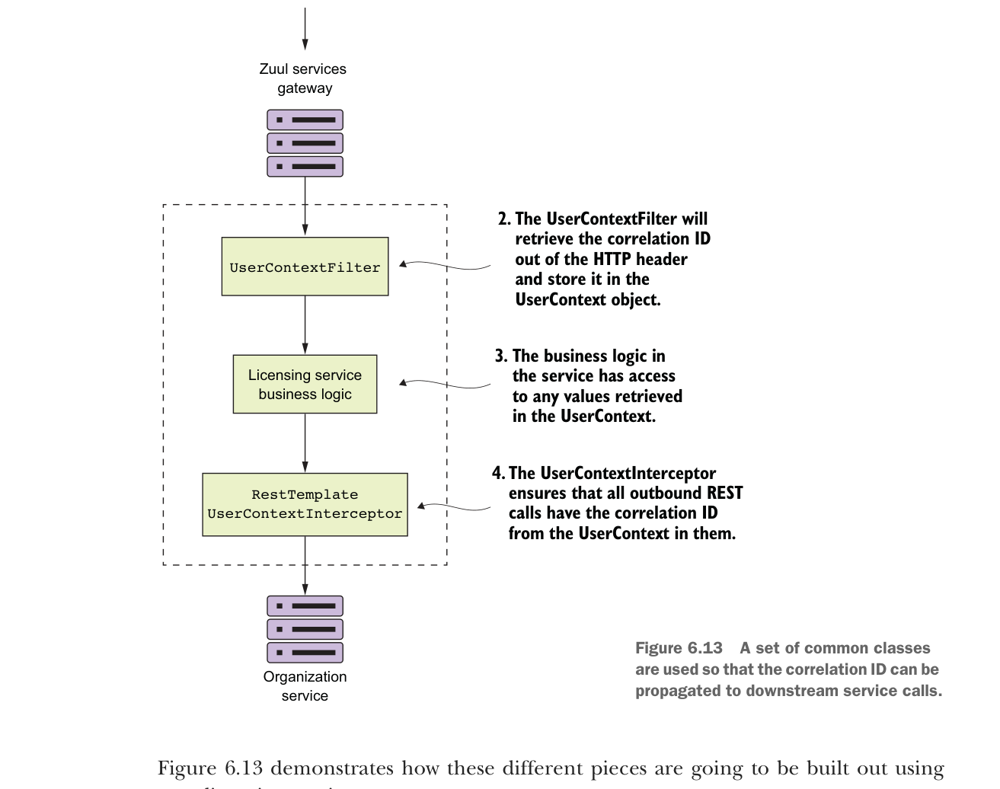

Một tập hợp các class dùng chung được dùng để correlation ID có thể được lan truyền tới các lời gọi dịch vụ downstream.
Hình 6.13 minh họa cách các phần khác nhau này sẽ được xây dựng bằng licensing service của bạn.
Hãy xem qua những gì đang diễn ra trong hình 6.13:
- Khi một lời gọi được thực hiện tới licensing service qua Zuul gateway,
TrackingFiltersẽ chèn correlation ID vào HTTP header đến cho mọi lời gọi vào Zuul. - Class
UserContextFilterlà một HTTPServletFiltertùy chỉnh. Nó ánh xạ correlation ID tới classUserContext. ClassUserContextlưu các giá trị trong thread-local storage để dùng sau trong lời gọi.